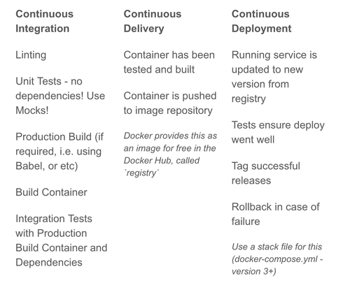

[GDD] The Production Stack - Continuous Delivery (Part 1 of 2) 04 December 2018

In this lesson, now that we have manually pushed our containers to our registries, let's explore a more automated way to get them there.
Although we don’t have enough time in GDD to get to full blown continuous deployment.. (we will in my upcoming DevOps Bliss course though!) By making use of Docker, docker-compose, and Makefiles, we can make a pretty darn good local continuous delivery pipeline.
Look at the image at the top of the email - I've included a table where it breaks down the difference between the different stages of continuous integration, continuous delivery, and continuous deployment.
Our goal is all of the steps in the first two columns that we can.
To do so, we are going to use a tool called "make"
make is a simple task runner that comes on most linux distributions.
We can use make to define a "Makefile" for the project, which essentially just groups sets of commands under the same key so we can do more complex steps as a single command.
We want to create a Makefile that can execute each of the commands in our build process, and then tag and push the image to Docker Hub.
Here’s the Makefile (note: make uses tabs, not spaces):
ci:
VERSION=${VERSION} make docker-build \
tag \
push
docker-build:
docker build -t split-test .
tag:
docker tag split-test patrickleet/split-test:${VERSION}
push:
docker push patrickleet/split-test:${VERSION}
If you’ve used make before, it’s pretty clear.
If not, it still probably is.
We've defined 4 steps, ci, which simply calls all of the others, which are "docker-build", "tag", and "push". You'll recognize the docker commands our make steps execute.
When we run it, and can specify a new version number as an environment variable.
Let’s try it out - I’ll give it a version number of 1.0
VERSION=1.0 make ci
This triggers Docker to build the image for the container described by the Dockerfile.
As part of that Dockerfile, we are using a "Multi-stage build", which actually can easily run our linting, and unit tests as part of that process.
Although it's local, this is actually a pretty decent Continuous Delivery pipeline, even though we need to manually specify the version number and run it locally.
(things that we automate away in my full DevOps Bliss course!)
Now, the 1.0 tag is available on Docker Hub:
Anytime we want to create a new release, all we have to do is specify a new version number, and run `make ci`.
Now that we have a consistent way to build our image, we just need the actual config file that will use it.
You could run this same script `make ci` on a build server, and it will work the exact same way there!
In my article*, I commit to master, which we've referenced a few times, I show how to hook this up to each commit automatically using Husky. Check it out if you still haven’t.
Do this as your homework tonight! That way you'll be one step closer to being able to commit to master yourself!
Patrick “Continuously Delivering” Scott